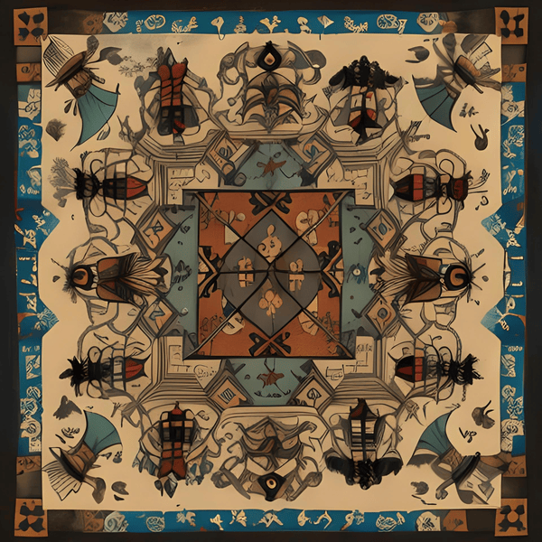
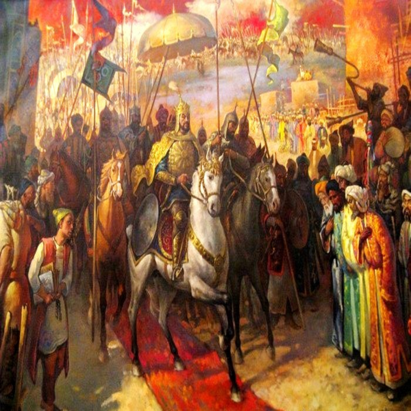
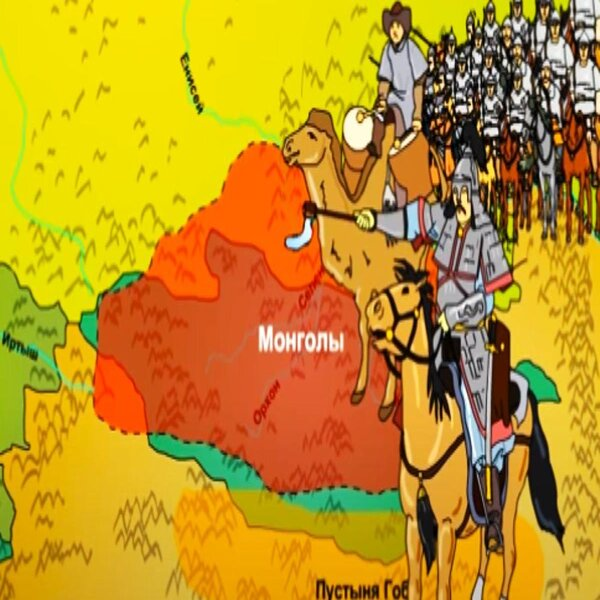
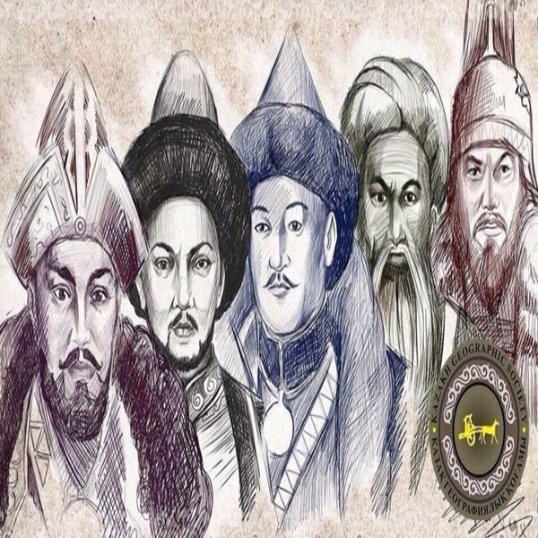
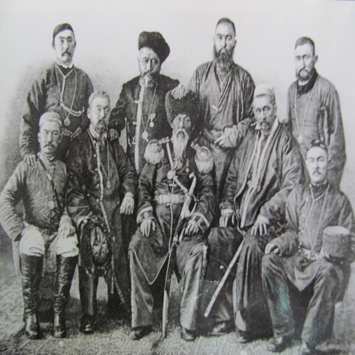

Территория современного Казахстана была домом для различных
кочевых племен и цивилизаций, включая скотоводов и воины,
такие как Саки и Уйсуны.

2. Гунны и Кочевники
В I веке до н.э. территория Казахстана стала частью великого
Скифо-Сарматского царства, а позднее была завоевана гуннами

3. Тюрки и ханства
В VI веке тюркские каганаты начали формироваться на
территории Казахстана. В средние века на этой земле возникли
различные ханства, такие как Хазарское, Карлукское, и
Кипчакское.

4. Монгольское нашествие
В XIII веке Казахстан подвергся нашествию монголов под
предводительством Чингисхана. Земли Казахстана стали частью
Золотой Орды, а затем разделились на несколько независимых
ханств.

5. Ханство Жузов
Казахская историография относит зарождение джузов к началу XVIII
века, русские источники — к XVII веку. Первые ханы трех джузов
появились 1718 годах Всего образовалось три джуза: Старший жуз,
Средний жуз и Младший жуз.

6. Российская империя
В конце XVIII века Россия начала активное наступление на
территорию Казахстана. В 19 веке большая часть его стала частью
Российской империи. Этот процесс завершился актом "О
распределении Туркестанского края" в 1867 году.
7. Советская эпоха
В 1920 году Казахстан становится частью РСФСР, а затем в 1936
году формируется Казахская Советская Социалистическая Республика
(КазССР) в составе Советского Союза.
8. Национальное самосознание
В период после Второй мировой войны в Казахстане происходил рост
национального самосознания, а также индустриализация и
коллективизация, которые оказали значительное влияние на
общество.